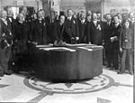

Gods' Man is a wordless novel by American artist Lynd Ward (1905–1985) published in 1929. In 139 captionless woodblock prints it tells the Faustian story of an artist who signs away his soul for a magic paintbrush. It was the first American wordless novel, and is seen as a precursor of, and influence on, the graphic novel. Ward first encountered the wordless novel with Frans Masereel's The Sun (1919) while studying art in Germany in 1926. He returned to the United States in 1927 and established a career for himself as an illustrator. He found Otto Nückel's wordless novel Destiny (1926) in New York City, and it inspired him to create a similar work. Gods' Man appeared a week before the Wall Street Crash of 1929; it nevertheless enjoyed strong sales and remains the best-selling American wordless novel. Its success inspired other Americans to experiment with the medium, including cartoonist Milt Gross, who parodied it in He Done Her Wrong (1930). In the 1970s Ward's example inspired cartoonists Art Spiegelman and Will Eisner to create their first graphic novels. (Full article...) Recently featured: Spotted green pigeon St Botolph's Church, Quarrington Catherine Zeta-Jones
Ongoing: Northern Rakhine State clashes Recent deaths: Liliane Bettencourt David Shepherd
September 28
Prosper Mérimée (b. 1803) · Florence Violet McKenzie (b. 1890) · Patsy Mink (d. 2002) More anniversaries: September 27 September 28 September 29 Archive By email List of historical anniversaries
A panoramic view of Toledo, as seen from the Parador Hotel in 2014. This central Spanish city is the capital of the province of the same name. It was declared a World Heritage Site by UNESCO in 1986 for its extensive cultural and monumental heritage. It has historically been influenced by the co-existence of Christians, Muslims and Jews. As of 2015, the city has a population of 83,226 and an area of 232.1 km2 (89.6 sq mi).
Photograph: Chensiyuan
Recently featured: Karang Bolong Beach (Nusa Kambangan) Elisha William Faulkner
Archive More featured pictures
Wikipedia is hosted by the Wikimedia Foundation, a non-profit organization that also hosts a range of other projects:
| Commons Free Media Repository |
MediaWiki Wiki software development |
Meta-Wiki Wikimedia project coordination |
| Wikibooks Free textbooks and manuals |
Wikidata Free knowledge base |
Wikinews Free-content news |
| Wikiqoute Collection of quotations |
Wikisource Free-content library |
Wikispecies Directory of species |
| Wikiversity Free learning materials and activities |
Wikivoyage Free travel guide |
Wiktionary Dictionary and thesaurus |